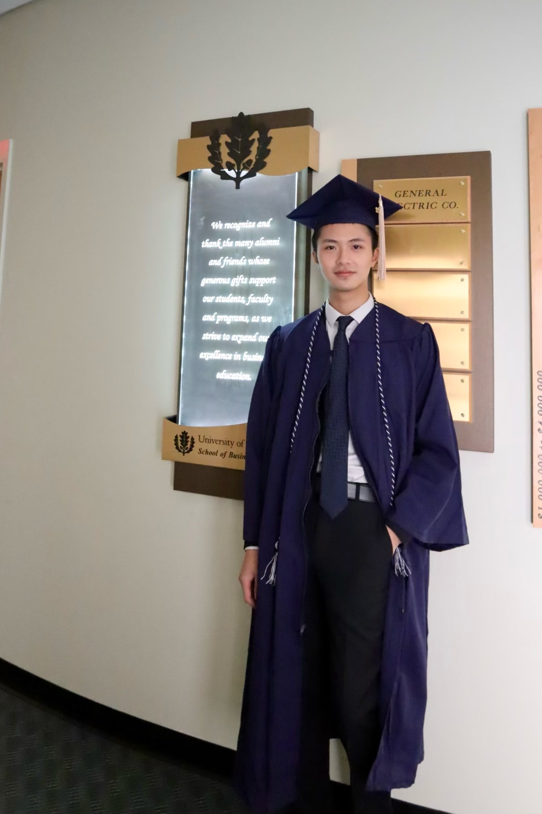

About meHello, my name is Elliot Li. I’m currently pursuing a Master's degree at Georgetown University’s Data Science & Analytics Program. I expressed interest in finance from an early age. As a child, I was deeply immersed in the business environment. Both my parents have worked in the finance industry for over 20 years. My father used to take me to his MBA classes on the weekends, and my mother would work on accounting sheets while baby-caring me. When I applied for college, I chose finance as a major for my Bachelor's degree at the University of Connecticut. During my time at UConn, I engaged in multiple school programs which helped to develop my leadership and professional skills. I was elected as a Multi-Cultural & Diversity senator in the Undergraduate Student Government in the school year of 2019-2020. My time at USG was invaluable. I had the pleasure to work with colleagues who cared greatly about the student body and became their friends over time. I concentrated on business school activities in my senior year. As an international student, I know too well the hardship of studying abroad. Because of that, I applied for the School of Business Office of Admission Peer Advisor position and focused on helping first-year international students to navigate their academic and social life at UConn. As the world moves to a digital era, I realized that data science will be immensely helpful to my future career in the finance industry. After careful consideration, I decided to accept the offer from Georgetown University and pursue an advanced degree in the field of data science. |
Education2018: Cambridge International A-Level Degree in Mathematics, Economics, Business, and Physics. 2022: University of Connecticut, School of Business, Bachelor of Science in Finance, with a minor in Philosophy. 2024: Georgetown University, Graduate School of Arts and Sciences, Master of Science in Data Science and Analytics. Contact InformationPhone: 860-208-7229 Georgetown Email: zl516@georgetown.edu LinkedIn: https://www.linkedin.com/in/zhengze-li-90517b193/ |
 School of Business, University of Connecticut, May 12th, 2022 |